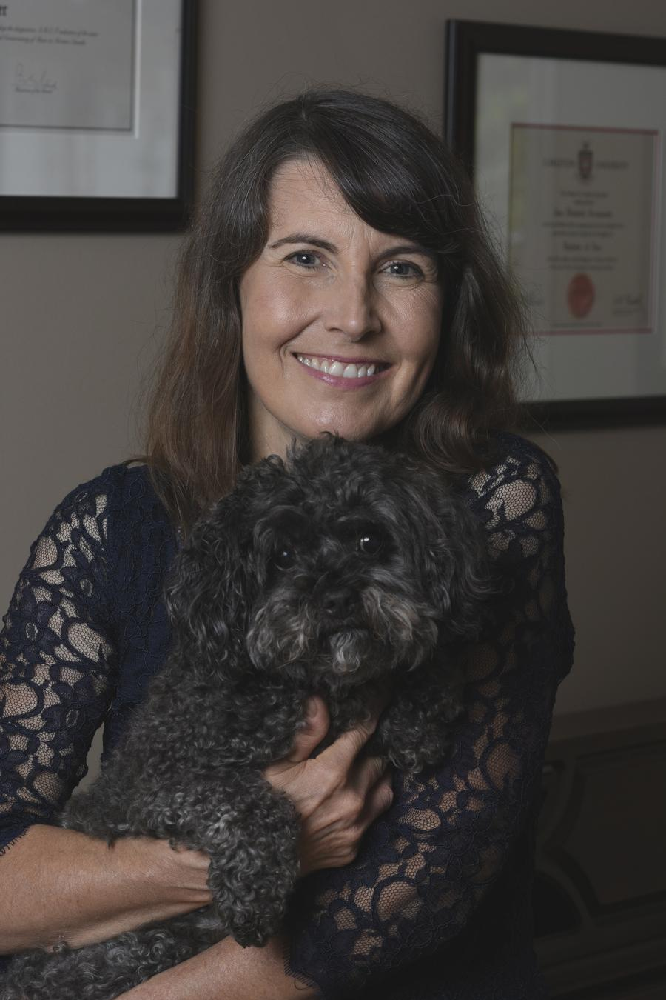

|
JANE |
STUDIO |
EARLY LIFE & EDUCATION |
 | |
|
EARLY LIFE
Jane was born in Saskatchewan, and raised in Ottawa. EDUCATION
Jane completed a Bachelor's Degree from UOttawa and Carleton, where she studied with Andrew Tunis, Canadian piano soloist, Juno nominee and Department Head.
|
|
CERTIFICATION Over her many years of experience, Jane has numerous certificates and licenses. These include her: |
|
|
EXPERIENCE & MEMBERSHIPS Jane has been teaching for over 25 years and is a registered ORMTA and soon BCRMTA teacher. Her other notable memberships include: |
STUDIO |
|
|
LOCATION |
STUDENT PERFORMANCE |
|
|
|
|
I still remember the first time I walked into the exam room.
The cold AC, sweaty palms, and the kind receptionist at the front of the room. It wasn’t easy to shake off the nerves, but once I sat down in front of the keys and it’s as if I was back home, sitting in the practise room as the familiar dim lighting shone across the keys. From there it was all natural instinct. It is an experience I will never forget. Piano has no doubt changed my life for the better. - Jane Yao |
Having gone through multiple piano exams, the experiences have taught me a plethora of skills.
It taught me to be patient, and that improving will only come with hard work and persistence. On the day of the exam, hard work and determination for music trumps my initial feelings of anxiety. When things get tough or difficult in life, I now approach such challenges with optimism. - Richard Xu |
My experience with piano exams have been nerve-wracking yet influential.
They’ve taught me that you have to focus on the present to make sure the notes are played correctly instead of dwelling on any past errors. Such a lesson is not only important in piano, but in every aspect of life, and I am grateful that participating in piano exams have given me such a learning opportunity. - Dhruv Rawat |
Piano exams are an undeniably difficult part of the musical journey.
I remember walking into the exam room, hands shaking, watching the photo of the examiner as that of a Disney villain. Unlike my imagination, the examiner was kind and friendly. The experience taught me so much. I learnt that despite the fear or the extreme expectations you set for yourself, that in the end anything is possible, it just comes down to perspective. - Bonnie Chin |